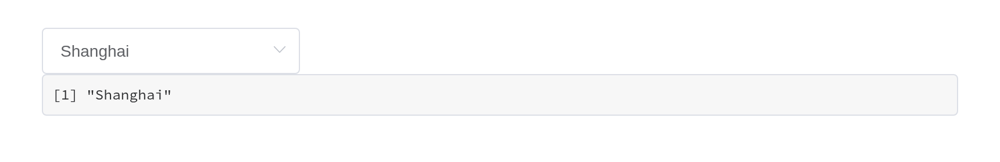
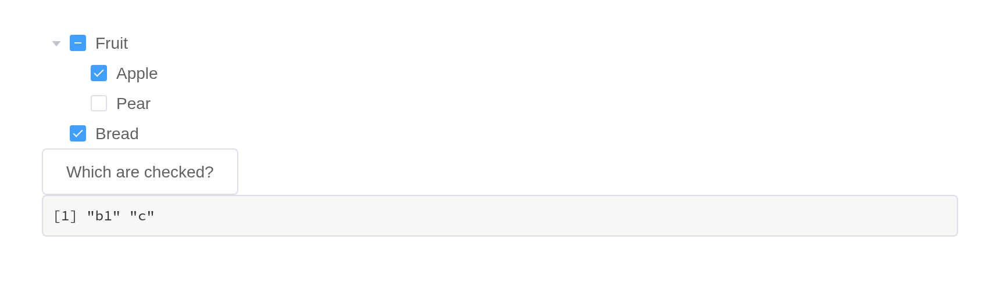
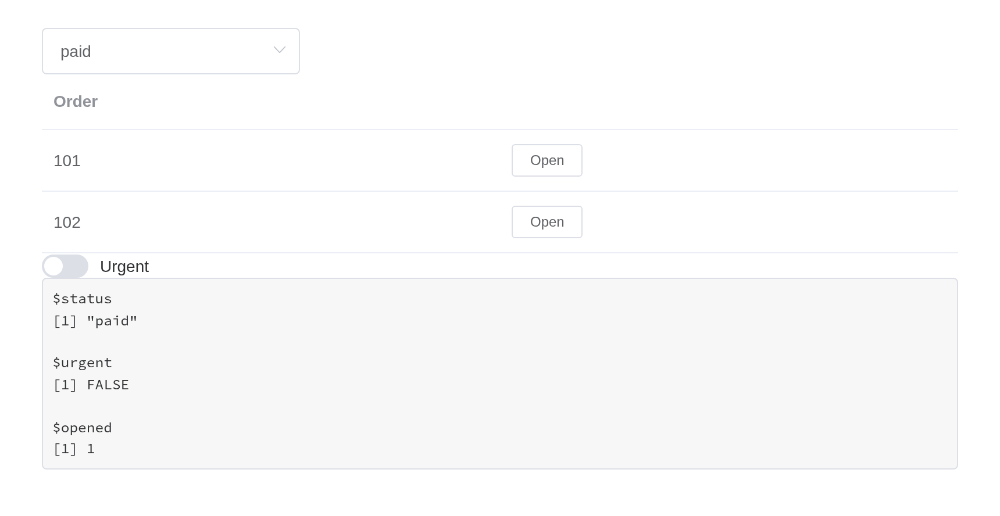
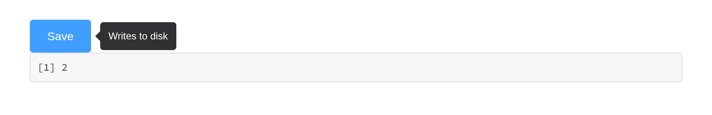
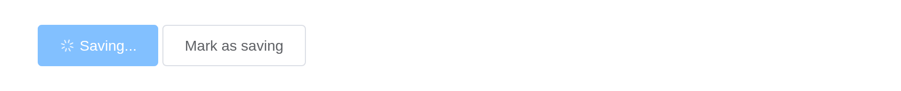
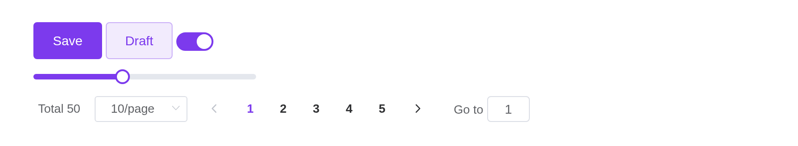
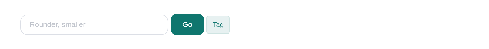
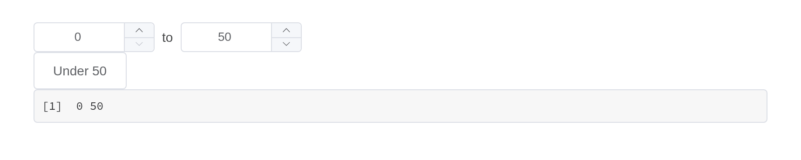

Everything Element UI 2.15.14 documents is wrapped: 83 components, 552 attributes, 94 events, 54 methods and 42 slots. What follows is the small print – the places where this package behaves differently from Element in a browser, and why.
Coverage is measured rather than claimed.
tools/api-coverage.R renders every component and reads the
markup back; tools/api-coverage.py compares that with the
API tables in Element’s own documentation.
Reading and writing a component
A component reports to input$<id>, on load as well
as on change:
ui <- el_page(
el_select("city", choices = c("Beijing", "Shanghai"), value = "Shanghai"),
verbatimTextOutput("picked")
)
server <- function(input, output, session) {
output$picked <- renderPrint(input$city)
}
shinyApp(ui, server)
Three separate channels reach back into it, and they do different things:
| Reaches | Example | |
|---|---|---|
update_el_*() |
the component’s props | update_el_select(session, "city", selected = "Beijing") |
el_call() |
the component’s methods | el_call(session, "tbl", "clearSelection") |
update_vue_data() |
the Vue instance’s fields directly | update_vue_data(session, "tip", list(tipContent = "...")) |
Like Shiny’s update*Input(), each takes the current
session by default, so
update_el_select(id = "city", selected = "Beijing") is the
same call. An update reaches a component whether or not it has a value
to report – an alert, a timeline, a component only ever drawn by
renderUI() – and one sent to an id that is not on the page,
or to a field the component does not have, logs a
[shiny-vue] warning in the browser console rather than
vanishing.
update_el_*() cannot call a method, because it assigns
into the Vue instance’s data and a method is a function. That is what
el_call() is for. A method with a return value answers
asynchronously, as input$<id>_<method>:
ui <- el_page(
el_tree("tree", show_checkbox = TRUE, node_key = "id",
default_expand_all = TRUE, checked = c("b1", "c"),
data = list(
list(id = "a", label = "Fruit", children = list(
list(id = "b1", label = "Apple"), list(id = "b2", label = "Pear"))),
list(id = "c", label = "Bread")
)),
el_button("ask", "Which are checked?"),
verbatimTextOutput("answer")
)
server <- function(input, output, session) {
observeEvent(input$ask, el_call(session, "tree", "getCheckedKeys"))
output$answer <- renderPrint(input$tree_get_checked_keys)
}
shinyApp(ui, server)
Events are event inputs
Every forwarded Element event sets its input with event priority. The
input keeps its last value like any other; what event priority adds is
that sending the same value again still counts as a change. Clicking the
same row twice fires an observeEvent() twice – while an
output that only reads the value sees nothing new the second time.
Here is the same row clicked twice. The output reading the value shows where the last click landed; only the observer knows there were two:
ui <- el_page(
el_table("tbl", data = head(iris[, c(1, 5)], 3)),
verbatimTextOutput("polled"),
verbatimTextOutput("latched")
)
server <- function(input, output, session) {
# Reading the value: the last row clicked, but not how many times
output$polled <- renderText({
paste("last row clicked:", input$tbl_row_click$row_index)
})
# Observing the event: runs once per click, repeats included
clicks <- reactiveVal(0)
observeEvent(input$tbl_row_click, clicks(clicks() + 1))
output$latched <- renderText(paste("clicks seen:", clicks()))
}
shinyApp(ui, server)
An event whose arguments cannot cross the wire – a native
FocusEvent, a DOM node, a whole Vue instance – reports
TRUE instead, so an observer can still tell that it
happened.
Shiny modules
Components follow Shiny’s own rule. In a module’s UI, the id is
wrapped in ns(), exactly as for textInput();
in its server, input$<id> and every
update_el_*() take the bare id, namespaced by the module’s
session. That holds for UI built by renderUI() inside the
module too, and for the inputs a component adds to its id –
input$rows_go from a row action,
input$tabs_edit, input$rows_selected_rows.
orders_ui <- function(id) {
ns <- NS(id)
tagList(
el_select(ns("status"), choices = c("paid", "pending"), selected = "paid"),
el_table(ns("rows"), data = data.frame(order = c(101, 102)), columns = list(
list(prop = "order", label = "Order"),
list(label = "", cell = el$button(size = "mini",
"@click" = "rowAction('open', scope)", "Open")))),
uiOutput(ns("more")),
verbatimTextOutput(ns("seen"))
)
}
orders_server <- function(id) {
moduleServer(id, function(input, output, session) {
# Built in the server, still wrapped in ns() once
output$more <- renderUI(el_switch(session$ns("urgent"), active_text = "Urgent"))
output$seen <- renderPrint(list(status = input$status, urgent = input$urgent,
opened = input$rows_open$row_index))
})
}
ui <- el_page(orders_ui("orders"))
server <- function(input, output, session) orders_server("orders")
shinyApp(ui, server)
Before 0.1.0 the UI functions namespaced their id themselves, from
the session they were built in – which inside renderUI() in
a module turned ns("urgent") into
"orders-orders-urgent", an input that never reported. They
no longer do; their session argument is deprecated, and a
session passed to it still namespaces, with a warning.
Shiny’s own tools
Each component is a Shiny input binding on a host element that carries its id, so the tools that work on Shiny’s inputs work on these.
Bookmarking. Under enableBookmarking(),
every component’s value comes back from a bookmark – including where a
container is: the open tab, the open panels of a collapse, an open
dialog or drawer, the menu’s current item, the pager’s page. Nothing
needs to be set up beyond what Shiny itself asks for.
ui <- function(request) {
el_page(
el_select("city", choices = c("Beijing", "Shanghai")),
el_tabs("views", tabs = list(
list(name = "table", label = "Table", content = tags$p("...")),
list(name = "chart", label = "Chart", content = tags$p("...")))),
bookmarkButton()
)
}
server <- function(input, output, session) {}
shinyApp(ui, server, enableBookmarking = "url")shinyjs. shinyjs::hide() and
show() take the component and its label with it;
disable() and enable() set the component’s own
disabled, so it is drawn disabled as Element draws it
rather than having a native attribute set somewhere underneath.
Inserting and removing. insertUI() and
renderUI() mount what they add; removeUI() on
a component’s id removes it and destroys its Vue instance, so it stops
reporting.
Validation. shinyvalidate draws its message the way Element draws a failed rule; see the forms article.
Testing. shinytest2’s set_inputs() and
get_values() read and write a component as they do a
textInput().
Nesting components
Two kinds of component wrap other content, and they behave differently.
Containers are plain markup. el_row(),
el_col(), el_container(),
el_collapse(), el_tabs(),
el_dialog() and el_drawer() render Element’s
own CSS classes and drive their state through a Shiny input binding.
They hold anything, and what is inside keeps working as it would on its
own.
el_collapse("panels", value = "one", items = list(
list(name = "one", title = "Settings", content = tagList(
el_switch("dark", value = TRUE, active_text = "Dark mode"),
el_rate("stars", value = 4)
)),
list(name = "two", title = "About", content = tags$p("Version 0.1.0"))
))Wrappers absorb what they are given.
el_tooltip(), el_popover(),
el_popconfirm() and el_infinite_scroll()
compile their content into their own Vue instance, so a component handed
to one is folded in rather than nested: the two become a single instance
carrying both sets of markup, data and methods.
ui <- el_page(
el_tooltip("hint", el_button("save", "Save", type = "primary"),
content = "Writes to disk", placement = "right"),
verbatimTextOutput("clicks")
)
server <- function(input, output, session) {
output$clicks <- renderText(paste("Saved", input$save, "times")) # still reports
}
shinyApp(ui, server)
This costs one thing. An absorbed component has no host of its own,
so nothing to send its update_el_*() to, and that stops
working – the browser console says so, with a [shiny-vue]
warning naming the id. Drive it through the wrapper instead:
ui <- el_page(
el_tooltip("hint", el_button("save", "Save", type = "primary"),
content = "Writes to disk"),
el_button("busy", "Mark as saving")
)
server <- function(input, output, session) {
observeEvent(input$busy, {
# Not update_el_button(session, "save", ...): the button has no host
# of its own any more. Its fields live on the tooltip.
update_vue_data(session, "hint", list(label = "Saving...", loading = TRUE))
})
}
shinyApp(ui, server)
If two absorbed components declare the same field – most declare a
label, a type and a disabled –
the second one’s fields are renamed on the way in
(el3_label), and the markup that names them is rewritten to
match. You only notice when reaching in with
update_vue_data(), where the renamed field is what to
set.
Slots
Every component takes slots, a named list:
el_alert("problem", type = "error", show_icon = TRUE,
description = "The upload was larger than 5 MB.",
slots = list(title = tags$span(tags$b("Upload failed"), " -- try again")))A scoped slot – one where Element hands the template variables that
only exist while Vue renders – is written with template()
and passed through untouched:
el_calendar("cal", value = "2026-03-15", slots = list(
dateCell = template(
htmltools::HTML(paste0(
"<div>{{ data.day.slice(8) }}",
"<b v-if=\"data.day.slice(8) === '15'\" style=\"color:#F56C6C\">",
" due</b></div>")),
slot = "dateCell", scope = "{date, data}"
)
))Filling a slot replaces what Element put there, default and all.
Element’s el-form-item error slot, for instance, wraps the
message in div.el-form-item__error; a template that renders
only the message loses the styling with it.
Sizing
width is accepted by every component and behaves like
the width of a Shiny input – "200px",
"50%", or a number meaning pixels. It lands on Element’s
own markup, because the host element carries
display: contents and generates no box of its own.
height is only where Element gives it a meaning:
el_table() fixes the header and scrolls the body,
el_slider() sizes a vertical track,
el_carousel() sets the frame. Element sizes controls
through size ("medium", "small",
"mini") rather than a height.
el_page(size = "small") sets that size for every
component not given one of its own, as
Vue.use(Element, {size: "small"}) does upstream;
z_index sets where Element’s popups start stacking.
use_element() takes both too. Element’s responsive helper
classes – hidden-xs-only, hidden-md-and-up and
the rest of its display.css – are loaded with it, for any
tag: tags$div(class = "hidden-sm-and-down", ...).
The page around the components
Element styles its components, not the page they sit on, and most of
its components set no font of their own – they inherit the page’s.
el_page() therefore themes the page too: its default,
el_theme(), is a bslib theme carrying Element’s blue,
greys, borders, corners, type size and font stack, so Shiny’s own inputs
and outputs match the Element ones beside them.
el_row(gutter = 16,
el_col(span = 12,
textInput("shiny_text", "Shiny's textInput()", "Ada"),
actionButton("shiny_go", "actionButton()", class = "btn-primary")),
el_col(span = 12,
tags$label("Element's el_input()"), el_input("el_text", value = "Ada"),
tags$div(style = "margin-top: 15px",
el_button("el_go", "el_button()", type = "primary"))))el_theme(primary = "#7c3aed") changes the brand colour,
and any other argument of bslib::bs_theme() or Bootstrap
variable can be overridden the same way. The theme’s
primary, success, warning,
danger and info reach Element’s components
too, with the tints and shades Element derives from each – a plain
button’s pale fill, a focused input’s border:
ui <- el_page(theme = el_theme(primary = "#7c3aed"),
el_button("save", "Save", type = "primary"),
el_button("draft", "Draft", type = "primary", plain = TRUE),
el_switch("notify", value = TRUE),
el_slider("level", value = 40, width = "240px"),
el_pagination("pages", total = 50))
shinyApp(ui, function(input, output, session) {})
Element’s other theme variables – its radii, sizes, greys, some five
hundred in theme-chalk’s common/var.scss – go in
el_theme(element =), by name without the
$--:
theme <- el_theme(primary = "#0f766e", element = list(
"border-radius-base" = "12px", "border-radius-small" = "8px",
"font-size-base" = "13px", "input-height" = "36px"))
ui <- el_page(theme = theme,
el_input("name", placeholder = "Rounder, smaller", width = "260px"),
el_button("go", "Go", type = "primary"),
el_tag("t", "Tag"))
shinyApp(ui, function(input, output, session) {})
Element’s stylesheet is built for the theme the way upstream builds
one. Brand colours alone are replaced in the shipped stylesheet, as
Element’s own theme picker does; anything more compiles Element’s Sass
sources, bundled with the package, as its theme tool does – about a
second, once per theme and R session. use_element(theme =)
does the same on a page that is not an el_page().
Element’s own markup
el holds a generator for every Element tag, for markup
that needs no Vue instance of its own – inside one that already exists.
Vue compiles <el-*> tags only within the component it
mounts, so a raw tag goes where a component draws its contents: a
template(), a slot, a table cell, a wrapper’s
trigger.
# The tooltip's instance compiles the raw button it wraps
el_tooltip("hint", el$button(type = "primary", "Markup only"), content = "No input")
el_button("save", "A component", type = "primary") # reports input$savePlaced at the top level of a page, the same el$button()
is never compiled and shows as its bare text. Use the raw tag where a
component would be wasted, and a component where the server needs to
hear about it.
Building your own
el_widget() assembles a component the way this package
assembles its own, and is exported for wrapping anything not covered
here, or covered differently:
initials <- function(id, name, size = 48) {
el_widget(
id = id,
markup = el$avatar(":size" = "size", "{{ letters }}"),
data = list(size = size, letters = paste(substr(strsplit(name, " ")[[1]], 1, 1),
collapse = "")),
dependency = element_ui_dependency()
)
}
initials("ada", "Ada Lovelace")
initials("alan", "Alan Mathison Turing", size = 64)An input of your own, built from el$ tags
The pattern to follow when Element has the parts but no component here puts them together the way you need – say, a price range made of two number inputs, reported as one value:
- write the markup with
el$tags, binding each control to a field ofdatawithv-model, and pass the result toel_widget(); - name the fields to report with
report = c(<field> = id). The field is theninput$<id>– on load, on every change, and after an update; - update it from the server with
update_vue_data(), wrapped in a function of your own so callers do not need to know the field names; - take
idas given, so the caller wraps it inns()inside a module; - pass
element_ui_dependency()unless the page is anel_page().
price_range_input <- function(id, value = c(0, 100), min = 0, max = 1000) {
el_widget(
id = id,
markup = tags$div(style = "display: flex; align-items: center; gap: 8px",
el$input_number("v-model" = "range[0]", ":min" = "min", ":max" = "range[1]",
"controls-position" = "right", size = "small"),
tags$span("to"),
el$input_number("v-model" = "range[1]", ":min" = "range[0]", ":max" = "max",
"controls-position" = "right", size = "small")),
data = list(range = as.list(value), min = min, max = max),
report = c(range = id),
dependency = element_ui_dependency()
)
}
update_price_range <- function(session, id, value) {
update_vue_data(session, id, list(range = as.list(value)))
}
ui <- el_page(
price_range_input("price", value = c(20, 300)),
el_button("cheap", "Under 50"),
verbatimTextOutput("picked")
)
server <- function(input, output, session) {
observeEvent(input$cheap, update_price_range(session, "price", c(0, 50)))
output$picked <- renderPrint(input$price)
}
shinyApp(ui, server)
Each component is a host element carrying its id, with the Element
markup inside and a Shiny input binding on it – the way reactR binds
React components – so the rest of Shiny can reach it:
shinyjs::hide(), shinyjs::disable(),
removeUI(), a test driver’s set_inputs(). A
component built with el_widget() gets all of that. Mounting
Vue yourself gets none of it: there is then no binding, and the id is
wherever you put it.
Where the argument name differs from Element’s
Arguments are snake_case versions of Element’s prop names, with six
exceptions. Each is deliberate; the rest translate mechanically
(show-overflow-tooltip becomes
show_overflow_tooltip).
| Element | Here | Why |
|---|---|---|
default-active |
active |
It is the current item, and update_el_menu() changes it
– “default” would suggest it is only read once |
default-expanded-keys |
expanded |
As above, for el_tree()
|
default-checked-keys |
checked |
As above |
props |
label_field, children_field,
disabled_field, is_leaf_field
|
el_tree()’s field map is four arguments rather than a
nested list |
data (upload) |
extra_data |
el_upload()’s data would read as the file,
not the fields sent beside it |
width (popover) |
popover_width |
Every component takes width for its own size; this one
sizes the card |
Two names for the choice components
el_select(), el_radio_group() and
el_checkbox_group() sit beside selectInput(),
radioButtons() and checkboxGroupInput(), so
they take Shiny’s names – and Element’s as well:
| Shiny’s name | Element’s name | Meaning |
|---|---|---|
choices |
options |
what can be picked |
selected |
value |
what is picked |
Either works, in the components and in their
update_el_*(), so code reads naturally to someone coming
from either side:
el_select("city_shiny", choices = c(Beijing = "bj", Shanghai = "sh"), selected = "sh")
el_select("city_element", options = c(Beijing = "bj", Shanghai = "sh"), value = "sh")The same holds in the server:
update_el_select(session, "city", selected = "bj") and
update_el_select(session, "city", value = "bj") do one
thing.
Given both names in one call, the two must agree; two different
values are an error rather than one quietly winning. The help pages
document each pair as one argument (selected, value). No
other component has a second name: everywhere else Shiny and Element
already agree on value.
A component’s value prop is its v-model, so
it is the value argument where the component has one and
the binding elsewhere – el_tooltip() and
el_popover() use value for whether they are
open, which update_el_*(value =) sets.
el_upload()’s on-success,
on-error and http-request are taken: they are
how files reach Shiny. The other hooks (on-change,
on-progress, before-upload, …) are yours.
Where a name does differ, the component’s help page documents both.
Checked arguments
An argument Element takes from a fixed set – a button’s
type, an input’s size, a tooltip’s
placement – is checked against that set, and a value
outside it is an error naming the ones that are allowed:
el_button("go", "Go", type = "primry")
#> Error: `type` should be one of "default", "primary", "success", "warning",
#> "danger", "info", "text", not "primry".Element itself would draw the button in its default style and say
nothing. The sets are read from Element’s documentation, its source and
its stylesheet together, so a value any of them accepts is accepted
here. Matching is exact: "prim" is not taken for
"primary".
Without Shiny
The components also work on a page with no Shiny session – an R
Markdown or Quarto document, a page saved with
htmltools::save_html(). They render and respond: a select
opens and picks, tabs switch, a collapse folds, a table’s rows tick.
What they cannot do there is report: there is no input, and
update_el_*(), el_call() and the feedback
functions have no server to come from. Load the scripts once with
use_element(), as for any page that is not an
el_page(). The examples on this website are built exactly
so.
Known gaps
Three attributes are deliberately unbound.
value on el-checkbox and
el-radio, which a group owns through v-model,
and the deprecated auto-complete spellings on
el-select and el-input, which upstream marks
@DEPRECATED beside the autocomplete this
package binds. They are listed in tools/api-coverage.py
with the reason.
Element’s i18n covers the component text, not yours.
el_page(locale =) switches Element’s own strings – a date
picker’s month names, a table’s “No Data”. Text you pass in is yours to
translate.
A component inside a renderUI() is re-created,
not updated. That is Shiny’s behaviour rather than this
package’s, but it matters more here: the new instance starts from its
arguments, so anything the user had changed is lost. Prefer
update_el_*() where you can.